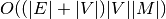
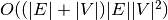

Random Walk Kernel¶
The random walk kernel.
RW-ker. as in [KTI03], [GartnerFW03].
-
class
grakel.kernels.random_walk.random_walk(**kargs)[source]¶ The random walk kernel class.
See [KTI03], [GartnerFW03] and [VBS06].
Parameters: lambda : float
A lambda factor concerning summation.
method_type : str, valid_values={“baseline”, “fast”}
- The method to use for calculating random walk kernel:
- “baseline” Complexity:
 (see [KTI03], [GartnerFW03])
(see [KTI03], [GartnerFW03]) - “fast” Complexity:  (see [VBS06])
- “baseline” Complexity:
kernel_type : str, valid_values={“geometric”, “exponential”}
Defines how inner summation will be applied.
p : int, optional
If initialised defines the number of steps.
Attributes
_lambda (float, default=0.1) A lambda factor concerning summation. _kernel_type (str, valid_values={“geometric”, “exponential”},) default=”geometric” Defines how inner summation will be applied. _method_type (str valid_values={“baseline”, “fast”},) default=”fast” The method to use for calculating random walk kernel: + “baseline” Complexity: (see [KTI03], [GartnerFW03]) + “fast” Complexity: (see [VBS06])_p (int, default=1) If not -1, the number of steps of the random walk kernel. Methods
diagonal()Calculate the kernel matrix diagonal of the fitted data. fit(X[, y])Fit a dataset, for a transformer. fit_transform(X)Fit and transform, on the same dataset. get_params([deep])Get parameters for this estimator. pairwise_operation(X, Y)Calculate the random walk kernel. parse_input(X)Parse and create features for graphlet_sampling kernel. set_params(**params)Set the parameters of this estimator. transform(X)Calculate the kernel matrix, between given and fitted dataset. -
pairwise_operation(X, Y)[source]¶ Calculate the random walk kernel.
Fast: Spectral demoposition algorithm as presented in [VBS06] p.13, s.4.4, with complexity of  for graphs witout labels.
Baseline: Algorithm presented in [KTI03], [GartnerFW03] with complexity of
Parameters: X, Y : Objects
Objects as produced from parse_input.
Returns: kernel : number
The kernel value.
-
parse_input(X)[source]¶ Parse and create features for graphlet_sampling kernel.
Parameters: X : object
For the input to pass the test, we must have: Each element must be an iterable with at most three features and at least one. The first that is obligatory is a valid graph structure (adjacency matrix or edge_dictionary) while the second is node_labels and the third edge_labels (that fitting the given graph format). If None the kernel matrix is calculated upon fit data. The test samples.
Returns: out : list
The extracted adjacency matrices for any given input.
Bibliography¶
| [GartnerFW03] | (1, 2, 3, 4, 5) Thomas Gärtner, Peter A. Flach, and Stefan Wrobel. On graph kernels: hardness results and efficient alternatives. In COLT. 2003. |
| [KTI03] | (1, 2, 3, 4, 5) Hisashi Kashima, Koji Tsuda, and Akihiro Inokuchi. Marginalized kernels between labeled graphs. In ICML. 2003. |
| [VBS06] | (1, 2, 3, 4) S. V. N. Vishwanathan, Karsten M. Borgwardt, and Nicol N. Schraudolph. Fast computation of graph kernels. In NIPS. 2006. |